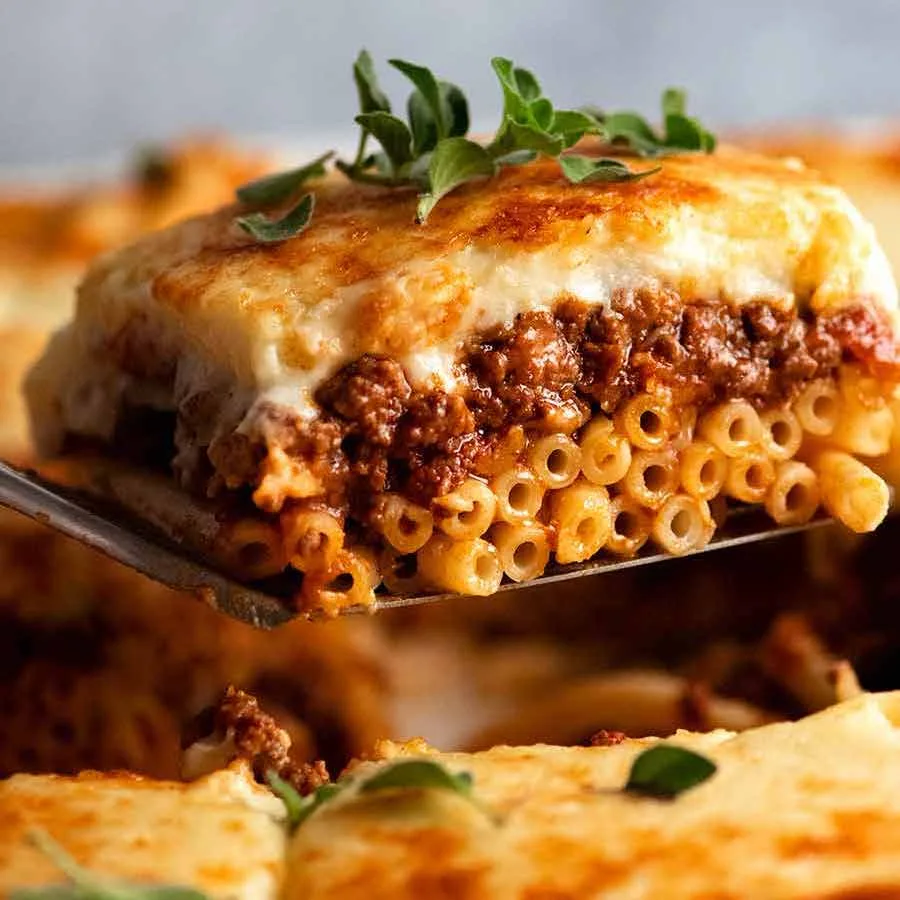

Pastitsio – with layers of pasta, a rich cinnamon-spiked red wine meat sauce, topped with a thick layer of cheese sauce, this is Greece’s answer to Italian Lasagna. Let the fun begin!
Pasta direction , Lay out the pasta so they are (mostly) in one direction if you want the visual effect of the pasta holes when you cut it, as pictured in the photos in this post; Cool meat sauce , A cool meat sauce will make the layers more distinct. Because it is thicker and more emulsified, it sits on top of the pasta rather than seeping down through it. It also provides a firmer bed onto which the Pastitsio white sauce is poured, helping that layer also stay distinct; White Sauce , Pour over and spread. If your white sauce cooled down and is too thick to pour, just reheat gently on a low stove until it is pourable; Grate over Kefalotyri (or parmesan if you can not find it) , then bake until the top is golden; and Rest for 15 minutes before cutting to serve. The longer it stands, the better it will hold its shape when cut. If you want really neat slices, make it the day before , reheat in the baking dish then cut!